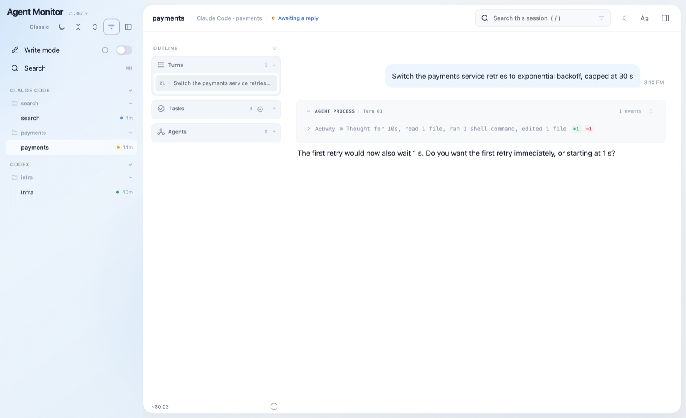
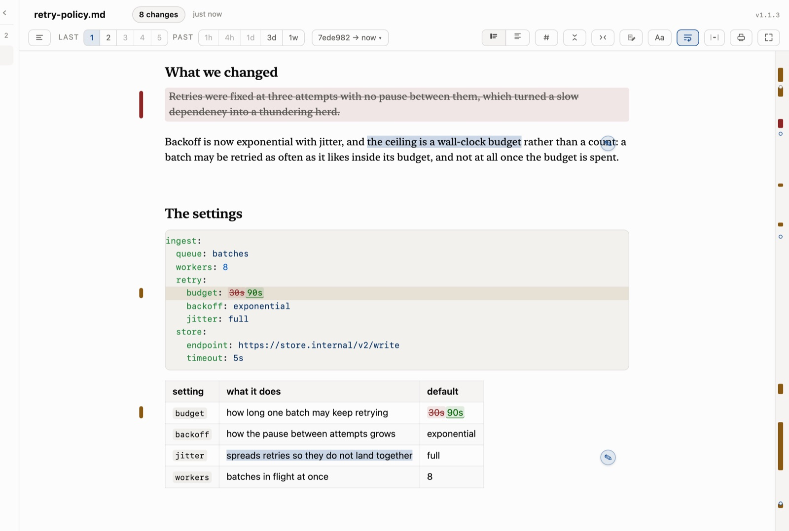
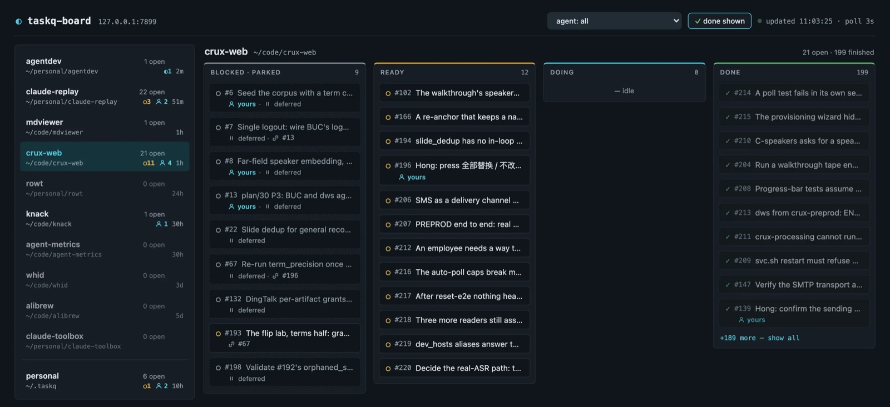

I’m building toward human–agent teams that work as one: agents that carry a team’s full context and act as an extension of each person, and teams that stay aligned as every member directs many agents.
Head of Project H, an AI-native engineering group in Alibaba Cloud’s CTO Office whose motto is Team with a Hive Mind, Agents as an Extended Brain. Before agents, two decades of internet-scale distributed systems: founding engineering lead of Alibaba Cloud’s Apsara stack, Hadoop at Yahoo, capacity infrastructure at Meta. Ph.D., Computer Science, UC Santa Barbara.
Coding agents raised a team’s production rate by an order of magnitude. Its coordination rate didn’t move. For two decades I scheduled scarce machines; now the scarce resource is human attention.
Project H is a ten-person group that rebuilds its own engineering workflow around coding agents, then turns what works into tools for other teams. Coding agents write and cross-review the code. People own the design (specs, ADRs, design-doc review) and the gates that decide what ships: tests, invariant checks, and evals. I have worked hands-on with coding agents since spring 2026 and full-time since June: about 3,200 agent-hours since July, summed across parallel sessions and measured by my own telemetry.
Task state is a document, not a memory. Work outlives a session, a context window, and a machine.
Review moves upstream. Humans read designs and plans, where a change is still cheap. Agents handle the diffs.
Evaluate the product as shipped. Score the real pipeline, including its prompts, retries and deadlines, not the model in isolation.
Human attention is the constraint. Agents are rarely the bottleneck; people waiting and reviewing are.
Stay agent-agnostic. No single agent will win, so shared substrate beats standardized clients.
Selected work
agent-replay & agent-monitor: observability for coding agents
When one person runs many agent sessions, the hard question is which of them is waiting on you right now. agent-monitor answers it from a single page. It reads Claude Code, Codex and Qoder transcripts through one agent-agnostic engine, shows which sessions are blocked on a human, searches across all of them, and lets you reply from a paired phone.
A streaming parser cut peak memory 2.6× on 300 MB transcripts, with byte-identical output. A validated parse cache brings a 400 MB session from about 86 s to 2.7 s on reopen.
Observe-only by default: no hooks, bound to loopback. Writing back to a session requires explicit pairing.
Ships daily and is used across the team every day.

agent-monitor on synthetic demo data: the session marked “Awaiting a reply” shows the question it is waiting on.
Crux: meeting memory as team context, and the evals behind it
SwiftPythonReactPostgres primary author
Meetings carry most of a team’s decisions, but generic transcription garbles names and jargon, and its summaries are throwaway. Crux began as my on-device macOS app (WhisperKit speech recognition, speaker diarization, a local LLM via Ollama). It grew into a nine-service web system that turns meetings into speaker-attributed, term-corrected transcripts, deduplicated slides and cited summaries, for people and agents alike.
Human corrections are anchored to the audio, not the text, so they survive re-transcription when a better model arrives.
Where two speech recognizers disagree, the disagreement becomes a term-correction candidate, and slide text is the strongest evidence.
Choosing models by measurement. I built an eval harness that runs the product’s own stage code, so scores include prompts, retries and deadlines. Blind judges come from three model families, and any pair of models is compared only by a judge from neither family, which avoids self-preference. Confidence intervals come from bootstrapping within meetings, and a hard spend cap held the full run to about $80 for 1,600 calls. Results:
Two of four stages moved to a cheaper model at parity.
Two stayed on the stronger frontier model where the harness measured regressions.
Building it exposed a guard that had been silently discarding 27% of outputs.
Knack: a package manager for agent skills
Rust co-designed with one teammate; I wrote the client
Skills (SKILL.md) are becoming the unit of reusable agent know-how, yet teams copy them around by hand with no versioning, no review, and no budget for the context they consume. Knack keeps one git-backed library and installs skills into Claude Code, Codex and Qoder, with edits made inside any agent flowing back to the library.
Admission: a conformance gate and a human sign-off before any skill reaches an agent, plus an Ed25519-signed catalog for one-line, company-wide setup.
Context budget: a capped set of always-loaded skills, with the rest found on demand through offline full-text discovery.
Reliability: one writer per agent directory, so an agent never sees a half-merged file; an operation journal; invariants checked on every command; about 70 architecture decision records.
Knack is still alpha; three teams have lined up to onboard.
agent-metrics: what coding agents actually do
RustSQLite creator
agent-metrics measures active agent time against wall clock, token cost by model, and agent- versus human-authored commits across machines. The team server receives counts only, never prompts or code. Its first surprise was that agents were active only about 8% of open-session time: session counts and wall clock overstate agent work more than tenfold, so we report active time.
mdrev and taskq: human-in-the-loop primitives
TypeScriptPython primary author
mdrev is code review for prose. An agent rewrites twenty pages, and you read a semantic redline across git revisions instead of the whole document again. Notes are anchored to the quoted text, survive later edits, and are picked up by agents, which fix them and resolve each with a link to the commit.

mdrev: a rendered redline across revisions, with anchored review notes in the margin.
taskq is a durable work queue that every coding agent can share across sessions and machines. It has atomic claims, executable definitions of done (commands that must pass), an audit line in the agent’s transcript for every change, and serverless sharing through git refs.

The taskq board: every repository’s queue, shared by people and agents.
Also in Project H
As tech lead I also guide a team knowledge base served to agents over MCP (ontology extraction, hybrid vector and graph retrieval), multi-person shared agent sessions, and an agent-maintained task ledger built from meetings. On the side I maintain rowt, a Rust split-routing proxy for macOS that a coding agent sets up for you.
Before agents: distributed systems
2023 – 2026
Chief Architect, Alibaba Cloud
Started and architected agentic operations: a federated multi-agent system for anomaly detection, incident diagnosis and recovery recommendation, in production since July 2026 across 7 engineering groups, with about 60% of production alerts, from early warnings up, now triggering automated diagnosis. Re-architected Apsara so an isolated region bootstraps with zero external dependencies.
2020 – 2023
Meta, cross-org tech lead for physical resource management
Capacity accounting and allocation across Meta’s infrastructure, with $1.5B in projected capex savings. Built a measurement framework that found $3B of opportunity in the compute fleet. One of five core tech leads of Infra Cloud.
2010 – 2020
Alibaba Cloud, from founding engineering lead to Chief Architect
Built the Apsara stack from the ground up: the Pangu distributed file system, the Fuxi scheduler, and coordination, RPC and monitoring. A single cluster reached 5,000 nodes in 2013, and FuxiSort set records in all four 2015 Sort Benchmark categories. Later technical advisor to Alibaba’s Executive Vice Chairman.
2008 – 2010
Yahoo, Hadoop performance
Built the Hadoop performance engineering team. Wrote Mumak, a MapReduce scheduler simulator, and TFile, the file format HBase’s HFile was derived from.
2000 – 2008
Teoma and Ask.com, search infrastructure
Founding engineer of the Teoma search engine, then built Ask.com’s offline search infrastructure and core C++ libraries.
Writing, talks & papers
Apsara Conference 2026, Hangzhou: opening remarks at the AI-Native R&D Organization Forum, and panelist on “A New Contract Between Humans and Agents.”
All Along the Watchtower: achieving the trinity of observability in cloud with DiTing. Z. Ren, S. Feng, E. Xu, et al., H. Tang. OSDI 2026. Paper
Integrated resource management for cluster-based Internet services. K. Shen, H. Tang, T. Yang, L. Chu. OSDI 2002. Paper
Fuxi: a fault-tolerant resource management and job scheduling system at internet scale. PVLDB 7(13), 2014. PDF
FuxiSort. Sort Benchmark, 2015: records in all four GraySort and MinuteSort categories. PDF
Earlier work on cluster-based internet services, threaded MPI and self-organizing storage at SC, INFOCOM, ICS, PPoPP and TOPLAS, plus US Patent 9,460,098 on VM snapshot deduplication. Full list
Founders’ Lessons interview, on moving from research to internet services and on building Alibaba Cloud. Part 1 · Part 2